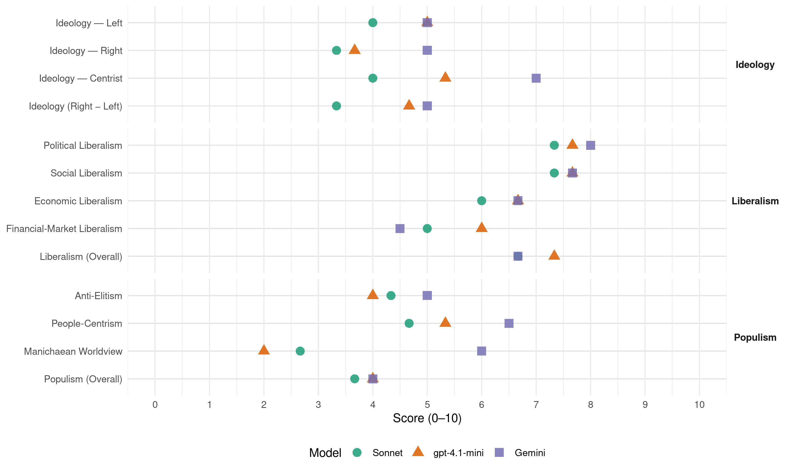

VU-ID21 (Belgium, 1999)
manifesto_id 21915_199906
Get full text: This site shows derived annotations and short verbatim quotes only. The full manifesto text is © Manifesto Project / WZB — obtain it via manifesto-project.wzb.eu using the manifesto_id above.
Headline scores
| Dimension | Sonnet | gpt-4.1-mini | Gemini |
|---|---|---|---|
| Populism (Overall) | 3.7 | 4.0 | 4.0 |
| Anti-Elitism | 4.3 | 4.0 | 5.0 |
| People-Centrism | 4.7 | 5.3 | 6.5 |
| Manichaean Worldview | 2.7 | 2.0 | 6.0 |
| Ideology (Right − Left) | 3.3 | 4.7 | 5.0 |
| Liberalism (Overall) | 6.7 | 7.3 | 6.7 |
| Political Liberalism | 7.3 | 7.7 | 8.0 |
| Social Liberalism | 7.3 | 7.7 | 7.7 |
| Economic Liberalism | 6.0 | 6.7 | 6.7 |
| Financial-Market Liberalism | 5.0 | 6.0 | 4.5 |
Evidence per dimension
Economic Liberalism
Gemini · score 7.0 · verified · chunk 1
“Een gezond ondernemingsklimaat voor Vlaanderen”
Een gezond ondernemingsklimaat voor Vlaanderen. Wie een zaak wil starten of wil investeren, moet voor alles terechtkunnen op één regionaal adres.
Gemini · score 7.0 · verified · chunk 2
“Consumenten moeten vrij kunnen kiezen welke”
die de arbeidsmarkt willen betreden. Wie wil ondernemen, moet daar ook in ondersteund worden. Consumenten moeten vrij kunnen kiezen welke goederen en diensten zij willen
Gemini · score 6.0 · verified · chunk 3
“laat gezonde vrije concurrentie toe”
Inzake energieproductie, transport en distributie staat de Alliantie VU&ID voor een volledige ontkoppeling: het kan niet zijn dat een zelfde onderneming al deze opdrachten samen in eigen handen heeft. Een ontkoppeling laat gezonde vrije concurrentie toe
gpt-4.1-mini · score 7.0 · verified · chunk 1
“een gezond ondernemingsklimaat voor Vlaanderen”
- Een gezond ondernemingsklimaat voor Vlaanderen. Wie een zaak wil starten of wil investeren, moet voor alles terechtkunnen op één regionaal adres.
gpt-4.1-mini · score 7.0 · verified · chunk 2
“een voorspelbare en gematigde fiscale druk moedigt ondernemerschap aan”
Een voorspelbare en gematigde fiscale druk moedigt ondernemerschap aan en geeft ondernemers meer mogelijkheden om hun investeringen en vernieuwingen met eigen middelen te financieren.
gpt-4.1-mini · score 6.0 · verified · chunk 3
“De Alliantie VU&ID wil dat ten laatste in 2010 de 1 procent norm wordt bereikt.”
…In de volgende regeerperiode is een geleidelijke verdubbeling van het budget voor ontwikkelingssamenwerking tot de internationaal afgesproken 0,7 procent een absolute prioriteit. De Alliantie VU&ID wil dat ten laatste in 2010 de 1 procent norm wordt bereikt. - Een verdere investering is nodig in de menselijke infrastructuur om daadwerkelijke participatie en effectieve ontwikkelingssamenwerking mogelijk te maken. - Meer middelen moeten in de eerste plaats gericht worden op de armsten in de wereld…
Sonnet · score 6.0 · verified · chunk 1
“gezond ondernemingsklimaat voor Vlaanderen”
Een gezond ondernemingsklimaat voor Vlaanderen. Wie een zaak wil starten of wil investeren, moet voor alles terechtkunnen op één regionaal adres.
Sonnet · score 7.0 · verified · chunk 2
“gezonde vrije concurrentie toe en opent perspectieven”
Een ontkoppeling laat gezonde vrije concurrentie toe en opent perspectieven voor kleinschalige energieproductie.
Sonnet · score 5.0 · verified · chunk 3
“gezonde vrije concurrentie toe en opent”
Een ontkoppeling laat gezonde vrije concurrentie toe en opent perspectieven voor kleinschalige energieproductie
Financial-Market Liberalism
Gemini · score 6.0 · verified · chunk 2
“financiering van kleine ondernemingen te ondersteunen”
particulieren om te lenen aan KMO’s; - Om de financiering van kleine ondernemingen te ondersteunen bestaat er een Vlaams Waarborgfonds
Gemini · score 3.0 · verified · chunk 3
“geen hypotheken mogen vestigen of kredieten verstrekken”
- Financieringsmaatschappijen geen hypotheken mogen vestigen of kredieten verstrekken voor het verhandelen van een onroerend goed dat bezwaard is met een bouwovertreding;
gpt-4.1-mini · score 6.0 · verified · chunk 2
“de invoering van een forfaitair rendement voor vermogensbestanddelen”
De vervanging van het huidige belastingstelsel op inkomens uit vermogen door de invoering van een forfaitair rendement voor vermogensbestanddelen zoals spaartegoeden, aandelen en andere beleggingen.
Sonnet · score 5.0 · verified · chunk 1
“harmonisering van de vennootschapsbelasting met vaststelling van een Europees minimumtarief”
werk gemaakt worden van een harmonisering van de vennootschapsbelasting met vaststelling van een Europees minimumtarief en een verschuiving van de belasting op arbeid naar de belasting op kapitaal.
Sonnet · score 6.0 · verified · chunk 2
“Investeerders willen nu eenmaal de vrijheid om hun beleggingen te spreiden”
Investeerders willen nu eenmaal de vrijheid om hun beleggingen te spreiden over verschillende projecten om hun beleggingsrisico’s te verminderen.
Sonnet · score 4.0 · verified · chunk 3
“Financieringsmaatschappijen geen hypotheken mogen vestigen”
Financieringsmaatschappijen geen hypotheken mogen vestigen of kredieten verstrekken voor het verhandelen van een onroerend goed dat bezwaard is met een bouwovertreding
Political Liberalism
Gemini · score 8.0 · verified · chunk 1
“binnen een parlementaire democratie de volksvertegenwoordiging het hoogste gezag”
Voor de Alliantie VU&ID is binnen een parlementaire democratie de volksvertegenwoordiging het hoogste gezag. Voor de Alliantie VU&ID is daarin geen plaats meer voor enige politieke rol voor de monarchie.
Gemini · score 8.0 · verified · chunk 2
“democratisering van het economisch leven”
ook voor een verder doorgedreven democratisering van het economisch leven. Dit hangt samen met het geven
Gemini · score 8.0 · verified · chunk 3
“beginselen van democratie, goed bestuur”
Die solidariteit moet de beginselen van democratie, goed bestuur en de eerbiediging van mensenrechten
gpt-4.1-mini · score 8.0 · verified · chunk 1
“het parlement moet weer de politieke prioriteit krijgen op de uitvoerende macht”
De voorbije jaren liet het parlement haar wetgevende opdracht al te zeer over aan de uitvoerende macht, de regering. Het parlement moet weer de politieke prioriteit krijgen op de uitvoerende macht.
gpt-4.1-mini · score 8.0 · verified · chunk 2
“een absoluut democratisch parlement”
HOOFDSTUK V EEN KWALITEITSVOLLE SAMENLEVING Een absoluut democratisch parlement, een zo menselijk mogelijke economie, sterke gemeenten, een Vlaanderen dat zijn eigen weg kan gaan, het heeft allemaal niet veel te betekenen als de individuele burger zich niet goed voelt.
gpt-4.1-mini · score 7.0 · verified · chunk 3
“Alle mensen en alle volkeren moeten over alle mensenrechten beschikken; mensenrechten staan immers met elkaar in verband, zijn van elkaar afhankelijk en versterken elkaar.”
…begonnen ID21 als voorvechter van de democratische rechten van alle burgers. De twee partners in de Alliantie vinden dus een oorsprong bij hun bekommernis voor mensenrechten. Beiden onderschrijven de stelling dat mensenrechten universeel en ondeelbaar zijn. Alle mensen en alle volkeren moeten over alle mensenrechten beschikken; mensenrechten staan immers met elkaar in verband, zijn van elkaar afhankelijk en versterken elkaar. Daadwerkelijke internationale solidariteit moet de beginselen van democratie…
Sonnet · score 8.0 · verified · chunk 1
“bindend referendum een wettelijke werkelijkheid wordt”
Dat het bindend referendum een wettelijke werkelijkheid wordt. Het referendum moet mogelijk zijn op volksinitiatief.
Sonnet · score 7.0 · verified · chunk 2
“Een absoluut democratisch parlement”
Een absoluut democratisch parlement, een zo menselijk mogelijke economie, sterke gemeenten, een Vlaanderen dat zijn eigen weg kan gaan
Sonnet · score 7.0 · verified · chunk 3
“beginselen van democratie, goed bestuur”
Die solidariteit moet de beginselen van democratie, goed bestuur en de eerbiediging van mensenrechten, waar ook ter wereld, mee willen realiseren
Liberalism (Overall)
Gemini · score 7.0 · verified · chunk 1
“binnen een parlementaire democratie de volksvertegenwoordiging het hoogste gezag”
Voor de Alliantie VU&ID is binnen een parlementaire democratie de volksvertegenwoordiging het hoogste gezag. Voor de Alliantie VU&ID is daarin geen plaats meer voor enige politieke rol voor de monarchie.
Gemini · score 7.0 · verified · chunk 2
“Consumenten moeten vrij kunnen kiezen welke”
die de arbeidsmarkt willen betreden. Wie wil ondernemen, moet daar ook in ondersteund worden. Consumenten moeten vrij kunnen kiezen welke goederen en diensten zij willen
Gemini · score 6.0 · verified · chunk 3
“beginselen van democratie, goed bestuur”
Die solidariteit moet de beginselen van democratie, goed bestuur en de eerbiediging van mensenrechten
gpt-4.1-mini · score 8.0 · verified · chunk 1
“het parlement moet weer de politieke prioriteit krijgen op de uitvoerende macht”
De voorbije jaren liet het parlement haar wetgevende opdracht al te zeer over aan de uitvoerende macht, de regering. Het parlement moet weer de politieke prioriteit krijgen op de uitvoerende macht.
gpt-4.1-mini · score 7.0 · verified · chunk 2
“een voorspelbare en gematigde fiscale druk moedigt ondernemerschap aan”
Een voorspelbare en gematigde fiscale druk moedigt ondernemerschap aan en geeft ondernemers meer mogelijkheden om hun investeringen en vernieuwingen met eigen middelen te financieren.
gpt-4.1-mini · score 7.0 · verified · chunk 3
“Alle mensen en alle volkeren moeten over alle mensenrechten beschikken; mensenrechten staan immers met elkaar in verband, zijn van elkaar afhankelijk en versterken elkaar.”
…begonnen ID21 als voorvechter van de democratische rechten van alle burgers. De twee partners in de Alliantie vinden dus een oorsprong bij hun bekommernis voor mensenrechten. Beiden onderschrijven de stelling dat mensenrechten universeel en ondeelbaar zijn. Alle mensen en alle volkeren moeten over alle mensenrechten beschikken; mensenrechten staan immers met elkaar in verband, zijn van elkaar afhankelijk en versterken elkaar. Daadwerkelijke internationale solidariteit moet de beginselen van democratie…
Sonnet · score 7.0 · verified · chunk 1
“rechtstreekse verkiezing van de regeringsploeg”
De rechtstreekse verkiezing van de regeringsploeg. U kiest wie het land bestuurt.
Sonnet · score 7.0 · verified · chunk 2
“elke discriminatie wegwerken, dus ook discriminatie op grond van seksuele geaardheid”
De Alliantie VU&ID wil elke discriminatie wegwerken, dus ook discriminatie op grond van seksuele geaardheid. Homo- en biseksuelen hebben principieel dezelfde rechten
Sonnet · score 6.0 · verified · chunk 3
“beginselen van democratie, goed bestuur”
Die solidariteit moet de beginselen van democratie, goed bestuur en de eerbiediging van mensenrechten, waar ook ter wereld, mee willen realiseren
Anti-Elitism
Gemini · score 8.0 · verified · chunk 1
“politici vanuit hun alleenzaligmakende wijsheid en ivoren toren”
Intussen zucht de burger naar iets anders, naar meer echte democratie. Hij of zij wil een democratie waarin niet alleen politici vanuit hun alleenzaligmakende wijsheid en ivoren toren bepalen wat goed is voor die eenzame burger.
Gemini · score 3.0 · verified · chunk 2
“opgewekte regeringsberichten kunnen niet verhullen”
WERK-VAART De opgewekte regeringsberichten kunnen niet verhullen dat Vlaanderen een zeer lage participatiegraad
Gemini · score 4.0 · verified · chunk 3
“toevallige machtselite meestal over voldoende geld”
In ontwikkelingslanden beschikt de toevallige machtselite meestal over voldoende geld om wapens te kopen
gpt-4.1-mini · score 7.0 · verified · chunk 1
“politiek gesjoemel en corruptie”
- Een radicale aanpak van politiek gesjoemel en corruptie. Corrupte partijen moeten zwaar worden gestraft.
gpt-4.1-mini · score 3.0 · verified · chunk 2
“de politiek de sociale zekerheid te hebben uitgebreid tot een solidariteit tussen alle leden van de samenleving”
Het is ook de verdienste van werkgevers en werknemers dat ze door de jaren heen de sociale bescherming van werknemers verankerden. Het is de verdienste van de politiek de sociale zekerheid te hebben uitgebreid tot een solidariteit tussen alle leden van de samenleving op basis van het burgerschap. Voor de Alliantie VU&ID blijven solidariteit en sociale zekerheid de uitgangspunten van de sociale zekerheid.
gpt-4.1-mini · score 2.0 · verified · chunk 3
“De onophoudelijke Maastricht-inspanningen waren hét thema en gingen ten koste van de ganse samenleving, maar zeker ten koste van de armen en de kansarmen.”
…grote groep van mannen en vrouwen die met steeds stijgende terugbetalingsproblemen te kampen hebben. Allemaal signalen van gebrek aan kansen, van armoede. Van een echt armoedebeleid is in ons land geen sprake. De bevoegdheden terzake liggen trouwens versnipperd over verschillende niveaus en instellingen. De onophoudelijke Maastricht-inspanningen waren hét thema en gingen ten koste van de ganse samenleving, maar zeker ten koste van de armen en de kansarmen. De Alliantie VU&ID wil van de armoedebestrijding een politieke prioriteit maken…
Sonnet · score 7.0 · verified · chunk 1
“machthebbers in hun macht te bevestigen”
gegoocheld met het begrip democratie en dat meestal alleen maar om machthebbers in hun macht te bevestigen, om het traditionele partijpolitieke systeem
Sonnet · score 3.0 · verified · chunk 2
“magnaten als Albert Frère met een minimum aan kapitaal”
Het Belgisch referentiekapitalisme, dat toeliet dat magnaten als Albert Frère met een minimum aan kapitaal een maximum aan beslissingsmacht konden verwerven, moet dan ook verdwijnen.
Sonnet · score 3.0 · verified · chunk 3
“agro-industrie terwijl het overgrote deel”
goed tachtig procent van de Europese landbouwgelden terecht komt bij de agro-industrie terwijl het overgrote deel van de subsidies die wel bij de landbouw terecht komen enkel de meest intensieve en grote bedrijven dient
Ideology — Centrist
Gemini · score 7.0 · verified · chunk 1
“een permanent maatschappelijk debat levensnoodzakelijk”
Om weer tot een echte democratie te kunnen komen is een permanent maatschappelijk debat levensnoodzakelijk. Om dat debat te vergemakkelijken, is het gebruik van nieuwe, al dan niet elektronische mogelijkheden essentieel.
gpt-4.1-mini · score 7.0 · verified · chunk 1
“de burger wil een democratie waar hij of zij mee bepaalt”
De burger wil een democratie waar hij of zij mee bepaalt hoe zijn of haar samenleving er morgen en vooral overmorgen zal uitzien.
gpt-4.1-mini · score 5.0 · verified · chunk 2
“een verder doorgedreven democratisering van het economisch leven”
Duurzame groei veronderstelt dus ook sociale gerechtigheid. Net zoals in andere geledingen van het maatschappelijk leven ijvert de Alliantie VU&ID ook voor een verder doorgedreven democratisering van het economisch leven. Dit hangt samen met het geven van kansen aan alle mensen die de arbeidsmarkt willen betreden.
gpt-4.1-mini · score 4.0 · verified · chunk 3
“De Alliantie VU&ID wil in de eerste plaats elke man of vrouw opnieuw ernstig nemen en ten volle betrekken bij het invullen van de regelgeving voor de samenleving.”
…Veiligheid in ieder geval een mensenrecht: in een onveilige buurt is “samen”-leven niet mogelijk. De Alliantie VU&ID wil in de eerste plaats elke man of vrouw opnieuw ernstig nemen en ten volle betrekken bij het invullen van de regelgeving voor de samenleving. Alleen ernstige betrokkenheid van de bevolking bij het bestuur kan een dam opwerpen tegen agressiviteit en onverantwoordelijkheid…
Sonnet · score 5.0 · verified · chunk 1
“burger wil een democratie waar hij of zij mee bepaalt”
De burger wil een democratie waar hij of zij mee bepaalt hoe zijn of haar samenleving er morgen en vooral overmorgen zal uitzien.
Sonnet · score 4.0 · verified · chunk 2
“Ongebonden aan politiek doen in functie van het algemeen belang”
De Alliantie VU&ID wil daarom - Ongebonden aan politiek doen in functie van het algemeen belang; - Opkomen voor zowel de economisch zwakkeren als voor bedrijven
Sonnet · score 3.0 · verified · chunk 3
“ernstig nemen en ten volle betrekken”
De Alliantie VU&ID wil in de eerste plaats elke man of vrouw opnieuw ernstig nemen en ten volle betrekken bij het invullen van de regelgeving voor de samenleving
Ideology — Left
Gemini · score 5.0 · verified · chunk 3
“terecht komt bij de agro-industrie”
dat goed tachtig procent van de Europese landbouwgelden terecht komt bij de agro-industrie terwijl het overgrote deel
gpt-4.1-mini · score 6.0 · verified · chunk 1
“sociale dumping is voor de Alliantie VU&ID een absolute prioriteit”
De strijd tegen de sociale uitsluiting is voor de Alliantie VU&ID een absolute prioriteit.
gpt-4.1-mini · score 6.0 · verified · chunk 2
“sociale gerechtigheid”
Duurzame groei veronderstelt dus ook sociale gerechtigheid. Net zoals in andere geledingen van het maatschappelijk leven ijvert de Alliantie VU&ID ook voor een verder doorgedreven democratisering van het economisch leven.
gpt-4.1-mini · score 3.0 · verified · chunk 3
“De Alliantie VU&ID wil van de armoedebestrijding een politieke prioriteit maken, een beleid dat meer moet zijn dan mensen te laten overleven.”
…Van een echt armoedebeleid is in ons land geen sprake. De bevoegdheden terzake liggen trouwens versnipperd over verschillende niveaus en instellingen. De onophoudelijke Maastricht-inspanningen waren hét thema en gingen ten koste van de ganse samenleving, maar zeker ten koste van de armen en de kansarmen. De Alliantie VU&ID wil van de armoedebestrijding een politieke prioriteit maken, een beleid dat meer moet zijn dan mensen te laten overleven. De Allliantie VU&ID is in dat verband pleitbezorger van: - Een duidelijke verankering van de participatie van de armen aan het beleid…
Sonnet · score 4.0 · verified · chunk 1
“sociale dumping”
Op die manier kan binnen de EU eindelijk werk gemaakt worden van een georganiseerde aanpak van de sociale dumping.
Sonnet · score 3.0 · verified · chunk 2
“solidariteit en sociale zekerheid de uitgangspunten”
Voor de Alliantie VU&ID blijven solidariteit en sociale zekerheid de uitgangspunten van de sociale zekerheid.
Sonnet · score 5.0 · verified · chunk 3
“verdediging van het gemengde familiaal landbouwbedrijf”
de verdediging van het gemengde familiaal landbouwbedrijf waar man en vrouw of ouders en kinderen in één bedrijfseenheid werken een absolute noodzaak is en blijft
Ideology (Right − Left)
Gemini · score 6.0 · verified · chunk 1
“een onafhankelijk, ongebonden en niet-bevoogd Vlaanderen”
De Alliantie VU&ID gaat daarbij uit van de confederale logica, dat wil zeggen een onafhankelijk, ongebonden en niet-bevoogd Vlaanderen.
Gemini · score 4.0 · verified · chunk 3
“terecht komt bij de agro-industrie”
dat goed tachtig procent van de Europese landbouwgelden terecht komt bij de agro-industrie terwijl het overgrote deel
gpt-4.1-mini · score 6.0 · verified · chunk 1
“politiek gesjoemel en corruptie”
- Een radicale aanpak van politiek gesjoemel en corruptie. Corrupte partijen moeten zwaar worden gestraft.
gpt-4.1-mini · score 5.0 · verified · chunk 2
“een verder doorgedreven democratisering van het economisch leven”
Duurzame groei veronderstelt dus ook sociale gerechtigheid. Net zoals in andere geledingen van het maatschappelijk leven ijvert de Alliantie VU&ID ook voor een verder doorgedreven democratisering van het economisch leven. Dit hangt samen met het geven van kansen aan alle mensen die de arbeidsmarkt willen betreden.
gpt-4.1-mini · score 3.0 · verified · chunk 3
“De Alliantie VU&ID wil van de armoedebestrijding een politieke prioriteit maken, een beleid dat meer moet zijn dan mensen te laten overleven.”
…Van een echt armoedebeleid is in ons land geen sprake. De bevoegdheden terzake liggen trouwens versnipperd over verschillende niveaus en instellingen. De onophoudelijke Maastricht-inspanningen waren hét thema en gingen ten koste van de ganse samenleving, maar zeker ten koste van de armen en de kansarmen. De Alliantie VU&ID wil van de armoedebestrijding een politieke prioriteit maken, een beleid dat meer moet zijn dan mensen te laten overleven. De Allliantie VU&ID is in dat verband pleitbezorger van: - Een duidelijke verankering van de participatie van de armen aan het beleid…
Sonnet · score 5.0 · verified · chunk 1
“radicale democratie”
HOOFDSTUK I RADICALE DEMOCRATIE — the chapter heading framing the party’s core appeal
Sonnet · score 2.0 · verified · chunk 2
“Ongebonden aan politiek doen in functie van het algemeen belang”
De Alliantie VU&ID wil daarom - Ongebonden aan politiek doen in functie van het algemeen belang; - Opkomen voor zowel de economisch zwakkeren als voor bedrijven
Sonnet · score 3.0 · verified · chunk 3
“agro-industrie terwijl het overgrote deel”
goed tachtig procent van de Europese landbouwgelden terecht komt bij de agro-industrie terwijl het overgrote deel van de subsidies die wel bij de landbouw terecht komen enkel de meest intensieve en grote bedrijven dient
Ideology — Right
Gemini · score 5.0 · verified · chunk 1
“onvervreemdbaar Vlaams karakter van de Vlaamse rand”
Aansluitend bij het gegeven Brussel, maar toch los ervan, staat de Alliantie VU&ID op het onvervreemdbaar Vlaams karakter van de Vlaamse rand rond de hoofdstad en de territoriale onaantastbaarheid van de provincie Vlaams-Brabant.
gpt-4.1-mini · score 6.0 · verified · chunk 1
“Vlaanderen moet blijven investeren in de kwaliteit van het onderwijs”
Vlaanderen moet blijven investeren in de kwaliteit van het onderwijs. Er moeten meer middelen komen voor het beroeps- en technisch onderwijs.
gpt-4.1-mini · score 3.0 · verified · chunk 2
“inburgering, zelfs integratieplicht en niet assimilatie of uitsluiting”
De Alliantie VU&ID wil naar morgen toe een nuchter beleid dat de mogelijke samenlevingsspanningen tussen allochtonen en autochtonen wegwerkt. Voor de Alliantie VU&ID is de leidraad daarbij inburgering, zelfs integratieplicht en niet assimilatie of uitsluiting.
gpt-4.1-mini · score 2.0 · verified · chunk 3
“Veiligheid, onveiligheid en “dus” criminaliteit, het zijn even zoveel argumenten voor de burger om zich te distantiëren van de samenleving waarin hij of zij leeft.”
…Veiligheid, onveiligheid en “dus” criminaliteit, het zijn even zoveel argumenten voor de burger om zich te distantiëren van de samenleving waarin hij of zij leeft. Des te meer omdat het al dan niet terechte maar subjectieve gevoelen van onveiligheid in veel gevallen gekoppeld wordt aan de zichtbare aanwezigheid van een steeds groter wordende groep allochtonen. Niet zelden worden politieoptreden en andere vormen van repressie voorgesteld als eerste en belangrijkste middel om die criminaliteit tegen te gaan…
Sonnet · score 6.0 · verified · chunk 1
“integratie veronderstelt eerst en vooral kennis en praktijk van de cultuur”
integratie veronderstelt eerst en vooral kennis en praktijk van de cultuur en de taal van de gemeenschap.
Sonnet · score 2.0 · verified · chunk 2
“inburgering, zelfs integratieplicht en niet assimilatie”
Voor de Alliantie VU&ID is de leidraad daarbij inburgering, zelfs integratieplicht en niet assimilatie of uitsluiting.
Sonnet · score 2.0 · verified · chunk 3
“allochtonen om die te laten gebeuren”
Inzake de klassieke rituele slachtingen vraagt de Alliantie VU&ID een inspanning vanwege de allochtonen om die te laten gebeuren onder bedwelming in erkende slachthuizen
Manichaean Worldview
Gemini · score 6.0 · verified · chunk 1
“als een sluipend gif trok de uitvoerende macht steeds meer macht”
Als een sluipend gif trok de uitvoerende macht steeds meer macht naar zich toe. Bij zoverre dat het dozijn mannen en vrouwen dat vandaag die uitvoerende macht in eigen handen heeft de feitelijke wetgevende macht is
gpt-4.1-mini · score 5.0 · mixed · chunk 1
“politieke onverschilligheid in ons land voor vele politici in steeds grotere mate een bron van onbehagen”
Vier jaar geleden zag het ernaar uit dat de politieke onverschilligheid in ons land voor vele politici in steeds grotere mate een bron van onbehagen en onrust zou worden.
gpt-4.1-mini · score 2.0 · verified · chunk 3
“Druggebruik en drugverslaving leiden tot een kunstmatige en geïsoleerde vlucht uit de werkelijkheid en tot persoonlijke en familiale drama’s.”
…Druggebruik en drugverslaving leiden tot een kunstmatige en geïsoleerde vlucht uit de werkelijkheid en tot persoonlijke en familiale drama’s. Drugmisbruik is ook een belangrijk gegeven in de ontwikkeling van de straatcriminaliteit. De Alliantie VU&ID wil het drugprobleem aanpakken zonder hypocrisie of taboes. Het onderscheid tussen legale drugs (alcohol, geneesmiddelen) en illegale drugs (van cannabis tot crack of heroïne) hangt in veel gevallen af van de maatschappelijke of culturele aanvaarding van het gebruik van bepaalde genotsmiddelen…
Sonnet · score 4.0 · verified · chunk 1
“verwijdering tussen DE burger en DE politicus”
De verwijdering tussen DE burger en DE politicus, tussen DE bevolking en DE politiek is minstens nog altijd even indrukwekkend breed.
Sonnet · score 2.0 · verified · chunk 2
“de Wereld Handelsorganisatie die van de landbouw”
De Alliantie VU&ID weigert ook mee te lopen in de logica van de Wereld Handelsorganisatie die van de landbouw in Europa een sociaal kerkhof maakt
Sonnet · score 2.0 · verified · chunk 3
“logica van de Wereld Handelsorganisatie”
De Alliantie VU&ID weigert ook mee te lopen in de logica van de Wereld Handelsorganisatie die van de landbouw in Europa een sociaal kerkhof maakt
People-Centrism
Gemini · score 8.0 · verified · chunk 1
“Het soevereine volk moet zich via een beslissende volksstemming rechtstreeks”
Dat het bindend referendum een wettelijke werkelijkheid wordt. Het referendum moet mogelijk zijn op volksinitiatief. Het soevereine volk moet zich via een beslissende volksstemming rechtstreeks kunnen uitspreken over maatschappelijke uitdagingen.
Gemini · score 5.0 · verified · chunk 3
“de bevolking te betrekken bij het invullen”
elke man of vrouw opnieuw ernstig nemen en ten volle betrekken bij het invullen van de regelgeving
gpt-4.1-mini · score 8.0 · verified · chunk 1
“de burger wil een democratie waar hij of zij mee bepaalt”
De burger wil een democratie waar hij of zij mee bepaalt hoe zijn of haar samenleving er morgen en vooral overmorgen zal uitzien.
gpt-4.1-mini · score 5.0 · verified · chunk 2
“iedereen kan genieten van de toegenomen welvaart”
Goede economische prestaties bevorderen het draagvlak om een verantwoord milieubeleid te voeren. Dit laatste veronderstelt dat iedereen kan genieten van de toegenomen welvaart. Duurzame groei veronderstelt dus ook sociale gerechtigheid.
gpt-4.1-mini · score 3.0 · verified · chunk 3
“Alle mensen en alle volkeren moeten over alle mensenrechten beschikken; mensenrechten staan immers met elkaar in verband, zijn van elkaar afhankelijk en versterken elkaar.”
…begonnen ID21 als voorvechter van de democratische rechten van alle burgers. De twee partners in de Alliantie vinden dus een oorsprong bij hun bekommernis voor mensenrechten. Beiden onderschrijven de stelling dat mensenrechten universeel en ondeelbaar zijn. Alle mensen en alle volkeren moeten over alle mensenrechten beschikken; mensenrechten staan immers met elkaar in verband, zijn van elkaar afhankelijk en versterken elkaar. Daadwerkelijke internationale solidariteit moet de beginselen van democratie…
Sonnet · score 7.0 · verified · chunk 1
“het soevereine volk moet zich via een beslissende volksstemming”
Het referendum moet mogelijk zijn op volksinitiatief. Het soevereine volk moet zich via een beslissende volksstemming rechtstreeks kunnen uitspreken
Sonnet · score 3.0 · verified · chunk 2
“een waardevolle samenleving voor alle mensen”
ze wil een waardevolle samenleving voor alle mensen die binnen hun leefomgeving een zo waardevol mogelijk bestaan willen voor zichzelf en voor allen rondom hem of haar.
Sonnet · score 4.0 · verified · chunk 3
“burger de nodige persoonlijke armslag krijgt”
kan uiteraard alleen maar als de burger de nodige persoonlijke armslag krijgt om tegenslagen op te vangen
Populism (Overall)
Gemini · score 7.0 · verified · chunk 1
“De verwijdering tussen DE burger en DE politicus”
Wie durft vandaag volhouden dat het nu echt anders is? De verwijdering tussen DE burger en DE politicus, tussen DE bevolking en DE politiek is minstens nog altijd even indrukwekkend breed.
Gemini · score 2.0 · verified · chunk 2
“opgewekte regeringsberichten kunnen niet verhullen”
WERK-VAART De opgewekte regeringsberichten kunnen niet verhullen dat Vlaanderen een zeer lage participatiegraad
Gemini · score 3.0 · verified · chunk 3
“de bevolking te betrekken bij het invullen”
elke man of vrouw opnieuw ernstig nemen en ten volle betrekken bij het invullen van de regelgeving
gpt-4.1-mini · score 7.0 · verified · chunk 1
“politiek gesjoemel en corruptie”
- Een radicale aanpak van politiek gesjoemel en corruptie. Corrupte partijen moeten zwaar worden gestraft.
gpt-4.1-mini · score 3.0 · verified · chunk 2
“de politiek de sociale zekerheid te hebben uitgebreid tot een solidariteit tussen alle leden van de samenleving”
Het is ook de verdienste van werkgevers en werknemers dat ze door de jaren heen de sociale bescherming van werknemers verankerden. Het is de verdienste van de politiek de sociale zekerheid te hebben uitgebreid tot een solidariteit tussen alle leden van de samenleving op basis van het burgerschap. Voor de Alliantie VU&ID blijven solidariteit en sociale zekerheid de uitgangspunten van de sociale zekerheid.
gpt-4.1-mini · score 2.0 · verified · chunk 3
“De onophoudelijke Maastricht-inspanningen waren hét thema en gingen ten koste van de ganse samenleving, maar zeker ten koste van de armen en de kansarmen.”
…grote groep van mannen en vrouwen die met steeds stijgende terugbetalingsproblemen te kampen hebben. Allemaal signalen van gebrek aan kansen, van armoede. Van een echt armoedebeleid is in ons land geen sprake. De bevoegdheden terzake liggen trouwens versnipperd over verschillende niveaus en instellingen. De onophoudelijke Maastricht-inspanningen waren hét thema en gingen ten koste van de ganse samenleving, maar zeker ten koste van de armen en de kansarmen. De Alliantie VU&ID wil van de armoedebestrijding een politieke prioriteit maken…
Sonnet · score 6.0 · verified · chunk 1
“burger wil een democratie waar hij of zij mee bepaalt”
De burger wil een democratie waar hij of zij mee bepaalt hoe zijn of haar samenleving er morgen en vooral overmorgen zal uitzien.
Sonnet · score 2.0 · verified · chunk 2
“magnaten als Albert Frère met een minimum aan kapitaal”
Het Belgisch referentiekapitalisme, dat toeliet dat magnaten als Albert Frère met een minimum aan kapitaal een maximum aan beslissingsmacht konden verwerven, moet dan ook verdwijnen.
Sonnet · score 3.0 · verified · chunk 3
“agro-industrie terwijl het overgrote deel”
goed tachtig procent van de Europese landbouwgelden terecht komt bij de agro-industrie terwijl het overgrote deel van de subsidies die wel bij de landbouw terecht komen enkel de meest intensieve en grote bedrijven dient
Social Liberalism